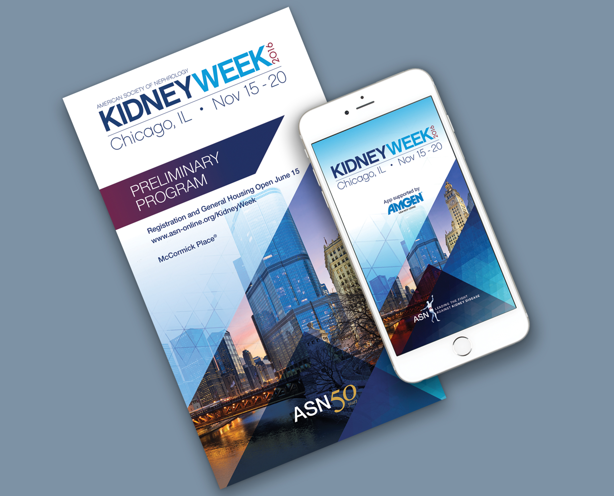

Short Bio
I am the principal of an award-winning boutique design studio. I have spent over 20 years crafting Fortune-500 style visual strategies for print and interactive media, working with a variety of healthcare, wellness, scientific and research organizations.
Starving Artist
I was born on the south side of Chicago, but spent my teenage years growing up in a small suburban town. I remember always creating things with my hands, drawing, and being in absolute wonder of the world. I always knew I would do something creative in life. I graduated from high school in the early 80s and my parents were NOT thrilled that I wanted to attend the Art Institute. In their minds, I would become a 'starving artist'. My parents' generation had no idea about the opportunities in the design field and the great growth (hence computers) there would be to come.

I learned graphic design the 'old school' way, using technical pens, Zipatone, Letraset and making folding dummies with the aid of spray glue and a light table. After I worked on the first Apple computer that my local collage was able to get their hands on, I was hooked… I thought. Before I went on to become a graphic designer, I changed my major to Fashion Merchandising, graduated and got a highly-coveted job with a retailer in downtown Chicago designing store windows and interior displays.
After a few years, I realized that my love for graphic design was still pulling at my heart, so I returned to school, focusing on graphic design again. Today I've been in the design field for over 20 years.
How did you first get interested in design?
My first interest in design was in my senior year in high school. The previous year I had completed all of my graduation requirements, so in my senior year I took all art classes. It was wonderfully enlightening! While being immersed in a photography and a graphic design class, I realized I wanted to pursue a design career.
Let's talk about your work. What have you done?
I specialize in print and interactive media for a variety of healthcare, wellness, scientific and research organizations. Some of my clients include; Drexel University, the Organization for Autism Research, the American Society of Nephrology, the American Association of Neurological Surgeons and the American Society for Clinical Laboratory Science.
I seek to make an impact and help empower people's lives through design. Social responsibility is a big focus of mine. I have a true a passion for non-profit organizations and the type of projects that come along with them. One special focus is an assortment of projects impacting the autism community ‒ a cause that is near and dear. This effort is supported by designing eye-opening projects to promote peer awareness and acceptance. Other design projects have made a big difference in lives by helping secure a $3.5 million gift to support transition to adulthood programs for the aging autism population to enhance their quality of life.
What is interesting about my design background is I started off as a Graphic Designer. However, I soon developed my skills in fine art and then also went on to become a more conceptual designer through the use of commercial design. All in all, I encourage all designers to design as much as possible while they are trying to establish themselves as designers and own a particular design style.
Partnering with the Organization for Autism Research (OAR), I designed an educational piece called 'The Kit for Kids.' It's a peer education program intended to teach children in the general education classroom about their peer(s) with autism. To date, the Kit for Kids has taught over 63,000 children all over the world about autism.
Other work I've done supports the kidney community, fighting kidney disease. I've helped rebrand the American Society of Nephrology, launch a new magazine & website (Kidney News), design the identity and brand of a partnership with the FDA (Kidney Health Initiative) and redesign their journals (CJASN & JASN).
What are your proudest accomplishments of your career?
I'm most proud of my recent accomplishment in getting featured as one of GDUSA's 'People to Watch in 2016' and also recognized as a Socially Responsible Designer. I feel that that is something to be proud of being a Black, female designer.
What have your experience been as a person of color in the design industry?
When I first began my career working in various companies and settings, I was always the only "one". I worked very hard, sacrificed a lot, but never felt appreciated. It always seemed like a popularity contest. I ultimately made the best decision ever to go out on my own and start my own design company. That is also one my proudest accomplishments, succeeding as an independent designer and feeling overwhelmingly appreciated by my clients.
How do your friends and family feel about the work you've done?
My family and friends are proud of me. My parents no longer fear that I will become a starving artist. Haha! If it were not for my dad, I don't think I would have made it through college. He bought my first Mac and my second Mac. He may have feared my career choice, but he still supported me.
How can design be more accommodating to underrepresented populations of people?
I think it would be wonderful if there were more classroom opportunities in schools at a younger age that exposed design and the different paths available in design the field. Colleges with design programs should also provide ongoing mentoring to reach out to the underrepresented. Firms can actively look for talented Black designers. Also, design conferences could form panels, etc.
What are you working on right now, either for work or for yourself?
Currently, I'm working on a publication for Drexel University, called "National Autism Indicators Report". It's a publication series produced by the AJ Drexel Autism Institute's Life Course Outcomes Research Program and focuses on the transition into young adulthood.
I'm also working on a book featuring my dog that will teach young kids on the autism spectrum social skills. My hope is to impact the autism community and help make positive social changes.
What have been your biggest struggles of your career?
With the proliferation of computers and access to design programs, even the hobbyist can “do” design while charging low fees with not so great outcomes. This in turn, makes it hard for a professional designer, who ends up having to educate clients and potential clients about the value of good design.

Where do you see yourself in 5 or 10 years? Do you think you'll stay in design?
In 5 to 10 years, I would love to continue to work in the design field. I would also love to open an art/tinker studio for children, where they could come after school, on the weekends or during the summer to work on anything from graphic design to painting to lego stop animation to coding their own drone.
What advice would you give to folks from similar backgrounds who are in design or hoping to get into it?
Learn all you can, listen to your heart and take chances. Master your style but also be open to change.